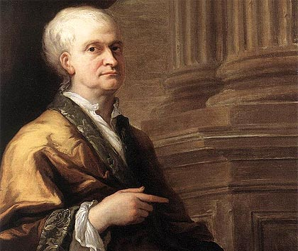

La revolución científica iniciada en el Renacimiento por Copérnico y continuada en el siglo XVII por Galileo y Kepler tuvo su culminación en la obra del científico británico Isaac Newton (1642-1727), a quien no cabe juzgar sino como uno de los más grandes genios de la historia de la ciencia. Sin olvidar sus importantes aportaciones a las matemáticas, la astronomía y la óptica, lo más brillante de su contribución pertenece al campo de la física, hasta el punto de que física clásica y física newtoniana son hoy expresiones sinónimas.
Una infancia difícil
Isaac Newton nació en las primeras horas del 25 de diciembre de 1642 (4 de enero de 1643, según el calendario gregoriano), en la pequeña aldea de Woolsthorpe, en el condado de Lincolnshire. Su padre, un pequeño terrateniente, acababa de fallecer a comienzos de octubre, tras haber contraído matrimonio en abril del mismo año con Hannah Ayscough, procedente de una familia en otro tiempo acomodada.Cuando el pequeño Isaac acababa de cumplir tres años, su madre contrajo de nuevo matrimonio con el reverendo Barnabas Smith, rector de North Witham, lo que tuvo como consecuencia un hecho que influiría decisivamente en el desarrollo del carácter de Newton: Hannah se trasladó a la casa de su nuevo marido y su hijo quedó en Woolsthorpe, al cuidado de su abuela materna.Del odio que ello le hizo concebir a Newton contra su madre y el.
Últimos años

Pese a la dificultad de su lectura, los Principios matemáticos de la filosofía natural le habían hecho famoso en la comunidad científica. En 1687, Newton había formado parte de la comisión que la Universidad de Cambridge envió a Londres para oponerse a las medidas de catolización del rey Jacobo II. Aunque quizá su intervención se debió más a su condición de laico que a su fama, ello le valió ser elegido por la universidad como representante suyo en el parlamento formado como consecuencia del desembarco de Guillermo de Orange y el exilio de Jacobo II a finales de 1688.